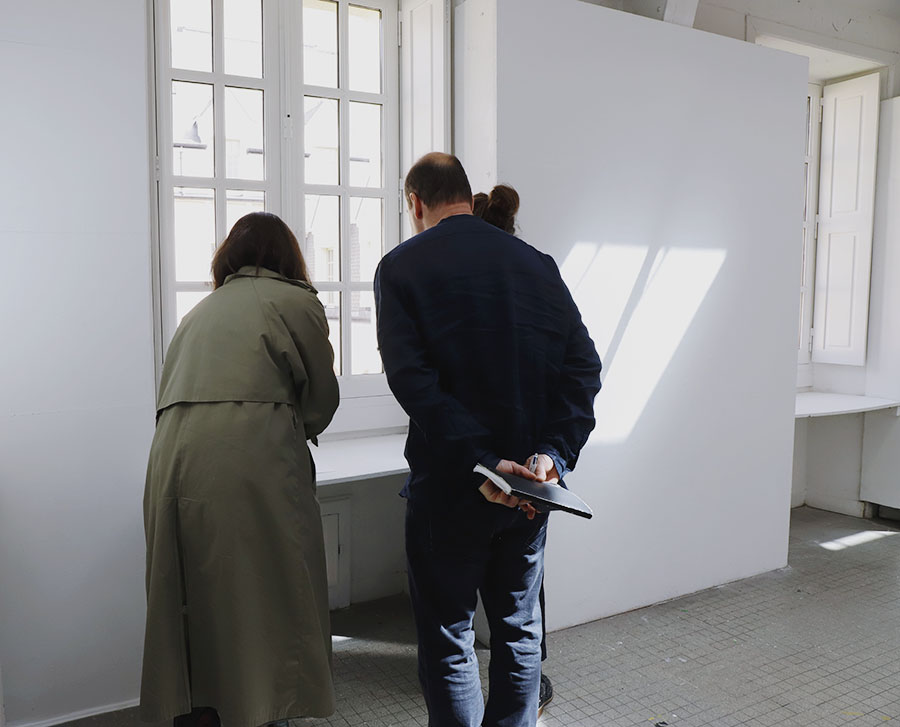
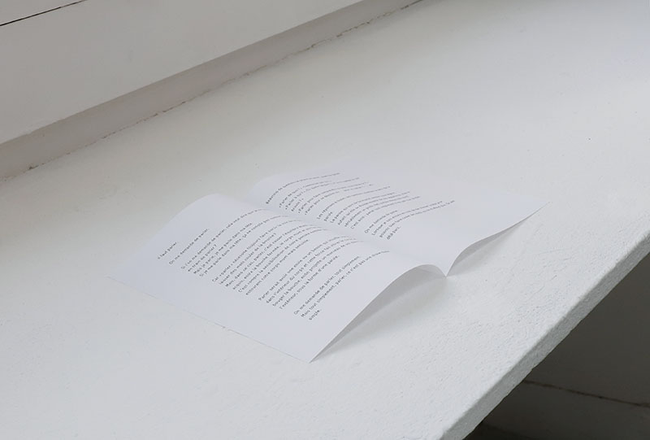
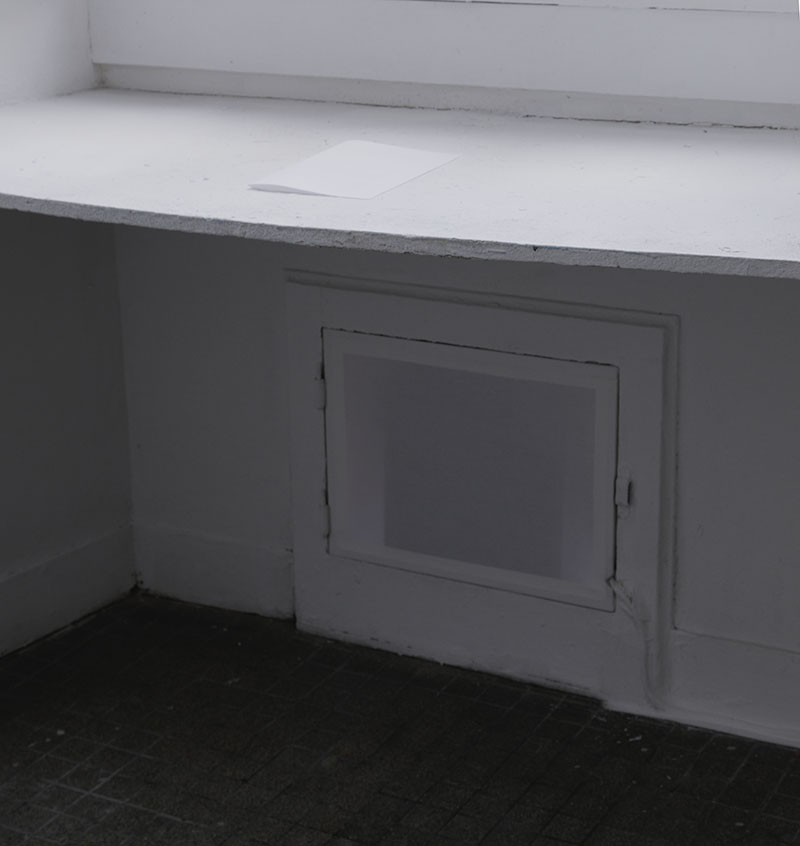

<!DOCTYPE html>
<html lang="zh-Hant-TW">
    <head>
        <meta charset="UTF-8">
        <!-- Enable RWD -->
        <meta name="viewport" content="width=device-width, initial-scale=1, shrink-to-fit=no">

        <title>Yi-Ping Huang / 藝術家・詩人</title>
        <!-- 檢查網頁簡述
        <meta name="description" content="Personal Web Site">
         -->
        <meta name="keywords" content="沉浸式空間, 行為藝術"> 
        <meta name="author" content="Yi-Ping Huang, 黃伊萍">

        <!--
        <link rel="icon" href="/favicon.ico" type="image/x-icon">
        <link rel="shortcut icon" href="/favicon.ico" type="image/x-icon">
        -->
          
        <link rel="stylesheet" href="../../../css/reset.css" media="all">
        <link rel="stylesheet" href="../../../css/style.css" media="all">
        <link rel="stylesheet" href="../../../css/projet.css" media="all">

    </head>

    <body>
        <header id="header">
            <input type="checkbox" id="burger">
            <label for="burger" class="toggle"><!-- &#9776; --></label>
            <ul class="langue_list" id="lg_list">
                <li>
                    <input type="radio" id="fr" name="langue" value="fr" class="langue" >
                    <label for="fr"><a href="../../../fr/projet/immersion_perf/en-s-attardant.html">FR</a></label>
                </li>&thinsp;/
                <li>
                    <input type="radio" id="en" name="langue" value="en"  class="langue" >
                    <label for="en"><a href="../../../en/projet/immersion_perf/en-s-attardant.html">EN</a></label>
                </li>&thinsp;/
                <li>
                    <input type="radio" id="zh" name="langue" value="zh"  class="langue" checked >
                    <label for="zh"><a href="#">繁</a></label>
                </li>&thinsp;       
            </ul>

            <nav class="main_menu" id="nav_zone">           
                <h1 class="logo">
                    <a href="../../../index.html" >Yi-Ping Huang</a>
                    <!-- 要檢查螢幕大小變化時 如果螢幕縮到最小 名字會被換行的問題 -->
                </h1> 

                <ul class="menu_list" id="menu_fr">
                    <!-- 要加上效果：滑鼠滑到主選單選項時 加上效果或記號標示 -->
                    <li><a href="../../immersion_perf.html">Immersion&thinsp;/&thinsp;Performance</a></li>
                    <li><a href="../../livre_ecrit.html">Livre d'artiste&thinsp;/&thinsp;Écriture</a></li>
                    <li><a href="../../installation_sculpture.html">Installation&thinsp;/&thinsp;Sculpture </a></li>
                    <li><a href="../../estampe_edition.html">Estampe&thinsp;/&thinsp;Édition</a></li>
                    <li><a href="../../photographie.html">Photographie</a></li>
                    <li>&nbsp;</li>
                    <!-- <li>&nbsp;</li> -->
                    <li><a href="../../actu.html">Actualité</a></li>
                    <li><a href="../../exposition.html">Exposition</a></li>
                    <li><a href="../../a_propos.html">À propos</a></li>
                    <li><a href="../../contact.html">Contact</a></li>
                </ul>
                <ul class="menu_list" id="menu_en">
                    <!-- 要加上效果：滑鼠滑到主選單選項時 加上效果或記號標示 -->
                    <li><a href="../../immersion_perf.html">Immersion&thinsp;/&thinsp;Performance</a></li>
                    <li><a href="../../livre_ecrit.html">Artists' book&thinsp;/&thinsp;Writing</a></li>
                    <li><a href="../../installation_sculpture.html">Installation&thinsp;/&thinsp;Sculpture </a></li>
                    <li><a href="../../estampe_edition.html">Printmaking&thinsp;/&thinsp;Edition</a></li>
                    <li><a href="../../photographie.html">Photography</a></li>
                    <li>&nbsp;</li>
                    <!-- <li>&nbsp;</li> -->
                    <li><a href="../../actu.html">News</a></li>
                    <li><a href="../../exposition.html">Exhibition</a></li>
                    <li><a href="../../a_propos.html">About</a></li>
                    <li><a href="../../contact.html">Contact</a></li>
                </ul>
                <ul class="menu_list" id="menu_zh">
                    <!-- 要加上效果：滑鼠滑到主選單選項時 加上效果或記號標示 -->
                    <li><a href="../../immersion_perf.html">空間&thinsp;/&thinsp;行為藝術</a></li>
                    <li><a href="../../livre_ecrit.html">藝術家書籍&thinsp;/&thinsp;書寫</a></li>
                    <li><a href="../../installation_sculpture.html">裝置藝術&thinsp;/&thinsp;雕塑 </a></li>
                    <li><a href="../../estampe_edition.html">版畫&thinsp;/&thinsp;複數性作品</a></li>
                    <li><a href="../../photographie.html">攝影&thinsp;/&thinsp;畫報</a></li>
                    <li>&nbsp;</li>
                    <!-- <li>&nbsp;</li> -->
                    <li><a href="../../actu.html">近況</a></li>
                    <li><a href="../../exposition.html">展覽</a></li>
                    <li><a href="../../a_propos.html">關於我</a></li>
                    <li><a href="../../contact.html">與我聯絡</a></li>
                </ul>
            </nav>  
            <div id="voile"></div>
        </header>
        <main>
            <!-- --------------------網頁變動內容 Main 開始----------------- -->
            <!-- |||||||||||||||||||||||||||||||||||||||||||||||||||||||||-->
            <h2 class="hidden">空間&thinsp;/&thinsp;行為藝術</h2>
            <nav class="sub_menu">
                <span class="sub_menu_title">空間&thinsp;/&thinsp;行為藝術 ____ </span> <br>
                <I class="titre"> 絮語中逗留 </I>     
            </nav>

            <div class="display_container">  
                <figure class="slide">
                    
                    <figcaption>展出實景, DNSEP Art, EESAB Rennes, 2019</figcaption>
                </figure>
                <figure  class="slide">
                    
                    <figcaption>展出實景, DNSEP Art, EESAB Rennes, 2019</figcaption>
                </figure>    
                <figure class="slide">
                        
                        <figcaption>展出實景, DNSEP Art, EESAB Rennes, 2019</figcaption>
                </figure>
                <figure class="slide">
                        
                        <figcaption>展出實景, DNSEP Art, EESAB Rennes, 2019</figcaption>
                </figure>

                <div class="slide_ctrl">
                    <button class="slides_btn display_left" onclick="plusDivs(-1)">&lt;<!--▷ &#10094;--></button>
                    <span id="s_index">1</span>&thinsp;&thinsp;/&thinsp;&thinsp;<span id="s_total"></span>
                    <button class="slides_btn display_right" onclick="plusDivs(1)">&gt;<!--▷ &#10095;--></button>
                </div>               
            </div>
           
            
            <article class="projet_info">     
                <h4><I class="titre t_bleu"> En s’attardant... （絮語中逗留） </I></h4> 
                <span class="legend t_bleu">
                    有聲走道, 2019<br>
                    空間、聲音、文字、錄音<br> 
                </span>
                <section class="illustration">    
                    <p>
                        整個空間——走道及聲音裝置，構成了作品的整體。
                    </p>
                    <p>
                        喃喃絮語的走道 <br>
                        使我們停留 <br>
                        在經過之中 <br>
                    </p>
                    <p>
                        走道中的聲音裝置播放著錄製的文字念讀，是讀出口的思緒，<br>
                        也是應答，對著已經結束的對話——交談者已經離開——的應答。<br>
                    </p>
                </section>
                <section>
                    <p>
                        <a href="../livre_ecrit/il-faut-parler.html"><U><I>Il faut parler（說些什麼）</I></U></a><br>
                        <span class="legend">
                            聲音裝置中的文字及錄音, 2019<br>
                            語言：法文
                        </span>
                        <div>
                            <audio controls>
                                <source src="../../../lecture/il_faut_parler_STE041.mp3" type="audio/mpeg">
                                您的瀏覽器無法播放音訊。
                            </audio>
                        </div>
                    </p>
                </section>
                <section>
                    <p>
                        <a href="../livre_ecrit/salle-noire.html"><I><U>Salle noire（黑暗的房間）</I></U></a><br>
                        <span class="legend">
                            聲音裝置中的文字及錄音, 2019<br>
                            語言：法文
                        </span>
                        <div>
                            <audio controls>
                                <source src="../../../lecture/salle_noire_STE038.mp3" type="audio/mpeg">
                                    您的瀏覽器無法播放音訊。
                            </audio>
                        </div>
                    </p>


                </section> 
            </article>
            <div class="retour">
                <a href="../../immersion_perf.html">返回 ▲</a>
            </div>
            
           
            <!-- |||||||||||||||||||||||||||||||||||||||||||||||||||||||||-->
            <!-- -------------------網頁變動內容 Main 結束------------------ -->
        </main>
            
           
        <!-- ----------------------版型 Footer 開始--------------------- -->
        <!-- |||||||||||||||||||||||||||||||||||||||||||||||||||||||||| -->
        <footer>&copy; 2014 Yi-Ping Huang 黃伊萍</footer>
        <!-- |||||||||||||||||||||||||||||||||||||||||||||||||||||||||| -->
        <!-- ----------------------版型 Footer 結束--------------------- -->
    </body>
</html>

<script type="text/javascript" src="../../../js/menu.js"></script>  
<script type="text/javascript" src="../../../js/slide.js"></script>  
       